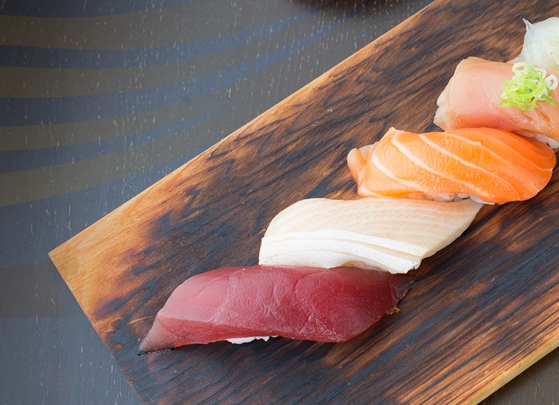

We age whole bluefin for eighteen days before a single cut reaches the counter. The fish sets the schedule. We keep it.
A whole bluefin is broken down within hours of landing, wiped dry, wrapped in sarashi cloth, and put to rest at two degrees.
The paper is changed every morning. Moisture leaves the flesh slowly; nothing else is done, and nothing else should be.
Enzymes begin their work. The flesh darkens half a shade and the aroma shifts from sea to something closer to stone fruit.
The chef checks each loin daily by scent and touch. Most fish are called here. Only a few are asked to keep waiting.
The loin is unwrapped once, trimmed, and cut to order at the counter. What took eighteen days is gone in one evening.
Most tuna never make it to day eighteen. The ones that do are the reason this restaurant exists.

Aging trades brightness for depth. By day eighteen the fat has softened into the muscle, the water has gone, and what remains tastes less like the ocean and more like itself.
Nigiri, two pieces, $15. Sashimi, three pieces, $22.50. Order it at the sushi bar, no reservation required.
See hours & addressThe neighborhood's recent favorite — a rich, slow-built spice base, made in house. It shares nothing with the aged fish except the patience.
Ask at the counter for today's preparation and price.